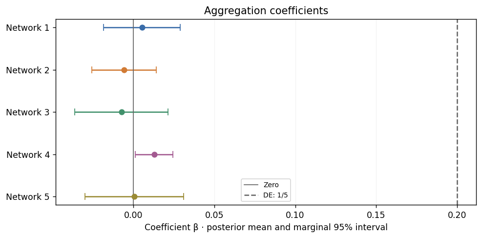
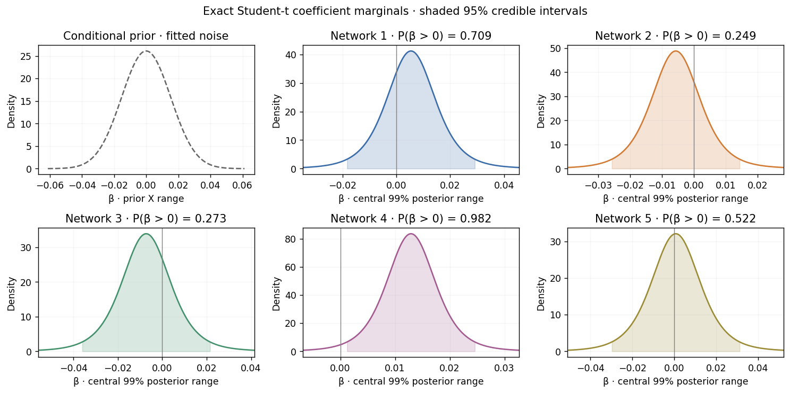
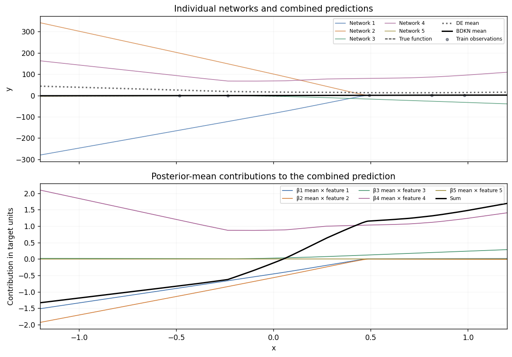
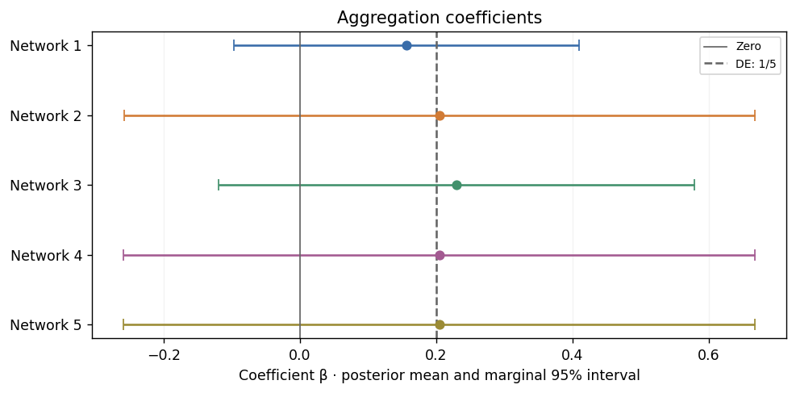
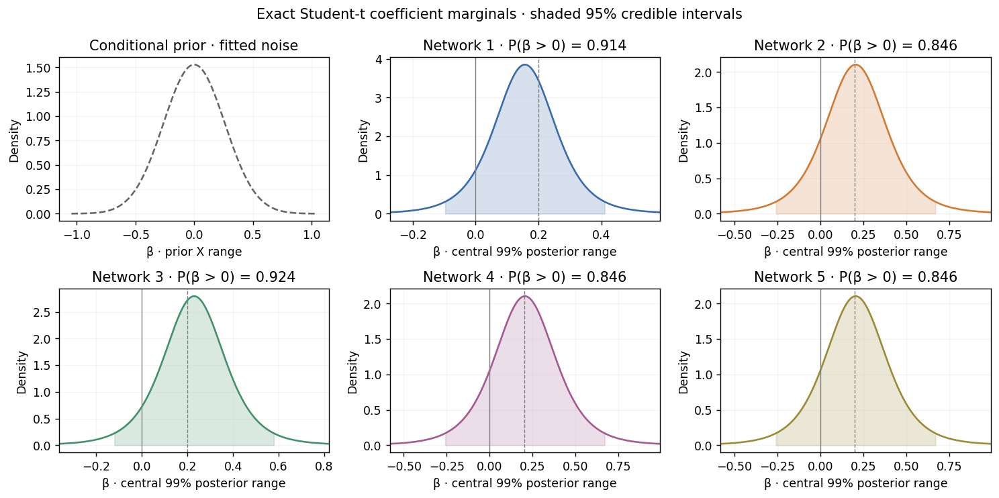
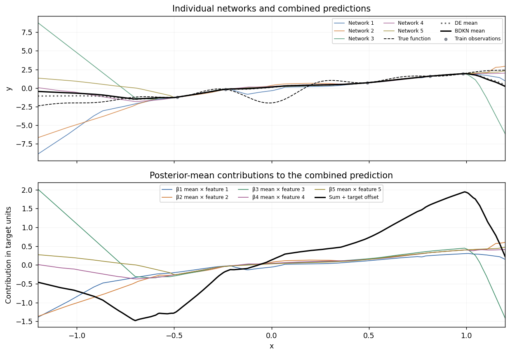
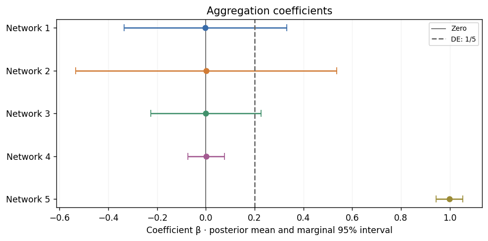
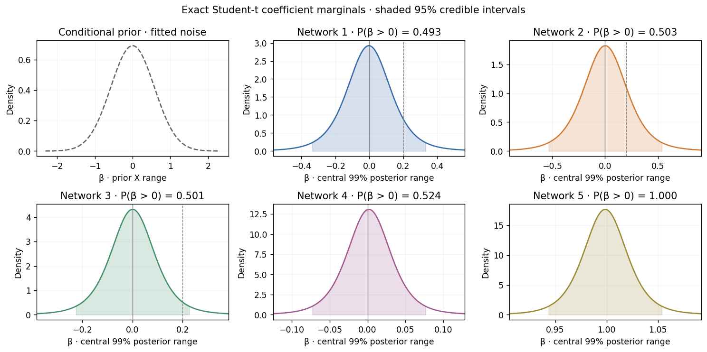
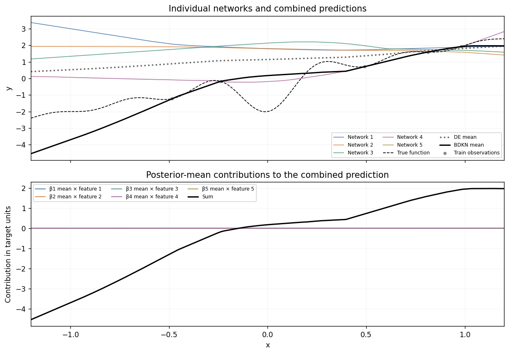

Regression comparison
Download resultsAggregation weights
Coefficients can be negative and need not sum to one. Intervals describe coefficient uncertainty; the dashed reference is DE’s fixed 1/H weight.
BDKN


Each density panel uses its own X range for readability; coefficient intervals above share a common axis. Prior reference conditions on fitted noise. Contribution shares use held-out inputs; test targets are used only for scoring.
| Network | β mean | 95% low | 95% high | P(β > 0) | Contribution share | Test RMSE | Test NLL |
|---|---|---|---|---|---|---|---|
| 1 | 0.18378 | -0.28768 | 0.65525 | 0.81884 | 0.18558 | 0.77438 | 14831.39553 |
| 2 | 0.21712 | -0.25401 | 0.68825 | 0.85530 | 0.21236 | 0.72161 | 5870.93193 |
| 3 | 0.18694 | -0.26881 | 0.64268 | 0.83002 | 0.18791 | 0.77327 | 3837.63935 |
| 4 | 0.21394 | -0.25925 | 0.68713 | 0.85120 | 0.21803 | 0.78641 | 25124.08623 |
| 5 | 0.19829 | -0.25603 | 0.65261 | 0.84357 | 0.19610 | 0.73920 | 2290.88784 |
Functional repulsion · BDKN



Each density panel uses its own X range for readability; coefficient intervals above share a common axis. Prior reference conditions on fitted noise. Contribution shares use held-out inputs; test targets are used only for scoring.
| Network | β mean | 95% low | 95% high | P(β > 0) | Contribution share | Test RMSE | Test NLL |
|---|---|---|---|---|---|---|---|
| 1 | 0.00543 | -0.01825 | 0.02910 | 0.70931 | 0.20877 | 131.64227 | 421.66844 |
| 2 | -0.00567 | -0.02564 | 0.01431 | 0.24931 | 0.26504 | 162.67943 | 588.30525 |
| 3 | -0.00725 | -0.03601 | 0.02151 | 0.27267 | 0.03427 | 17.86902 | 2611.96444 |
| 4 | 0.01291 | 0.00125 | 0.02458 | 0.98199 | 0.49153 | 97.61392 | 7.88315 |
| 5 | 0.00070 | -0.02973 | 0.03113 | 0.52246 | 0.00039 | 0.79263 | 1998.14114 |
Weight repulsion · BDKN



Each density panel uses its own X range for readability; coefficient intervals above share a common axis. Prior reference conditions on fitted noise. Contribution shares use held-out inputs; test targets are used only for scoring.
| Network | β mean | 95% low | 95% high | P(β > 0) | Contribution share | Test RMSE | Test NLL |
|---|---|---|---|---|---|---|---|
| 1 | 0.15654 | -0.09666 | 0.40974 | 0.91357 | 0.19902 | 1.62759 | 7760.53250 |
| 2 | 0.20490 | -0.25833 | 0.66813 | 0.84647 | 0.26285 | 1.40952 | 14619.88638 |
| 3 | 0.22940 | -0.11995 | 0.57875 | 0.92389 | 0.26275 | 3.16404 | 2025219.47815 |
| 4 | 0.20468 | -0.25884 | 0.66820 | 0.84610 | 0.14780 | 0.88978 | 21313.93273 |
| 5 | 0.20465 | -0.25888 | 0.66818 | 0.84607 | 0.12758 | 1.34796 | 184094.20318 |
First-order repulsion · BDKN



Each density panel uses its own X range for readability; coefficient intervals above share a common axis. Prior reference conditions on fitted noise. Contribution shares use held-out inputs; test targets are used only for scoring.
| Network | β mean | 95% low | 95% high | P(β > 0) | Contribution share | Test RMSE | Test NLL |
|---|---|---|---|---|---|---|---|
| 1 | -0.00224 | -0.33582 | 0.33134 | 0.49345 | 0.00312 | 2.82923 | 4.11559 |
| 2 | 0.00167 | -0.53292 | 0.53626 | 0.50305 | 0.00199 | 2.47565 | 1.75336 |
| 3 | 0.00029 | -0.22541 | 0.22598 | 0.50124 | 0.00034 | 2.37729 | 2.10895 |
| 4 | 0.00180 | -0.07277 | 0.07638 | 0.52358 | 0.00076 | 1.08794 | 1466.63803 |
| 5 | 0.99870 | 0.94353 | 1.05388 | 1.00000 | 0.99378 | 0.98532 | 40338.69178 |